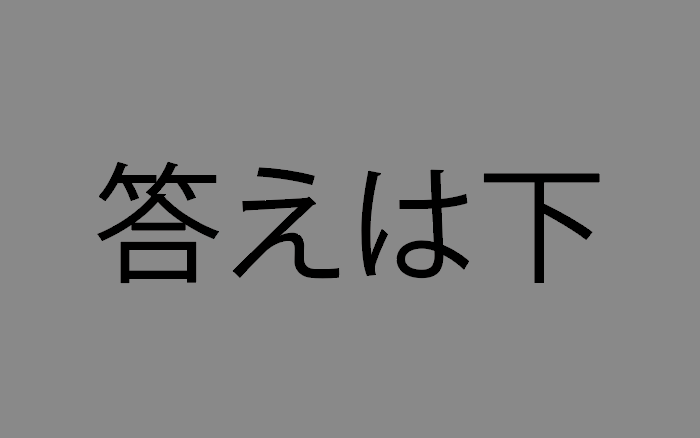

ミニテスト~チャプター2~
以下あなたの答え
Q1.
Q2.
Q3.
Q4.
Q5.
解説
Q1. 答え:Yes/yes チャプター2参照。
Q2. 答え:ドット/./どっと チャプター2参照。
Q3. 答え:シャープ/#/しゃーぷ チャプター2参照。
Q4. 答え:マージン/margin/まーじん チャプター2参照。
Q5. 答え:パディング/padding/ぱでぃんぐ チャプター2参照。
以下あなたの答え
Q1. 答え:Yes/yes チャプター2参照。
Q2. 答え:ドット/./どっと チャプター2参照。
Q3. 答え:シャープ/#/しゃーぷ チャプター2参照。
Q4. 答え:マージン/margin/まーじん チャプター2参照。
Q5. 答え:パディング/padding/ぱでぃんぐ チャプター2参照。